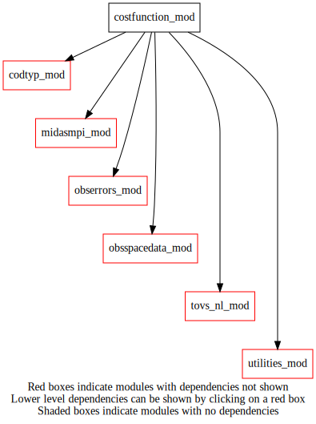
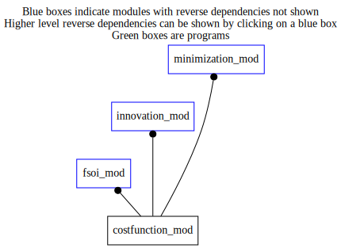

Dependency Diagrams:
 Direct Dependency Diagram¶
 Reverse Dependency Diagram¶
Description
MODULE costfunction_mod, (prefix=”cfn” category=’5. Observation operators’)
- Purpose
To compute Jo term
Quick access
- Routines
Needed modules
midasmpi_mod: MODULE midasMpi_mod (prefix=’mmpi’ category=’8. Low-level utilities and constants’)
obsspacedata_mod: MODULE obsSpaceData_mod (prefix=’obs’ category=’6. High-level data objects’)
rttov_const(inst_name(),platform_name())
tovs_nl_mod: MODULE tovs_nl (prefix=’tvs’ category=’5. Observation operators’)
utilities_mod: MODULE utilities_mod (prefix=’utl’ category=’8. Low-level utilities and constants’)
obserrors_mod: MODULE obsErrors_mod (prefix=’oer’ category=’2. B and R matrices’)
codtyp_mod: MODULE codtyp_mod (prefix=’codtyp’ category=’8. Low-level utilities and constants’)Variables
Subroutines and functions
- subroutine costfunction_mod/cfn_calcjo(lobsspacedata)¶
- Purpose
To compute JO contribution of each assimilated and diagnosed datum, and to store the result in OBS_JOBS
- Arguments
lobsspacedata [struct_obs ]
- Called from
- Call to
- subroutine costfunction_mod/cfn_sumjo(lobsspacedata, pjo[, besilent_opt])¶
- Purpose
To compute the sum of Jo contributions saved in OBS_JOBS. Also, to compute contribution of each family of observation (for diagnostic purposes)
- Arguments
lobsspacedata [struct_obs ]
pjo [real ,out] :: Total observation cost function
- Options
besilent_opt [logical ]
- Called from
- Call to
oer_getsstdataparam_int(),readnamelist(),obs_numbody(),obs_bodyelem_r(),obs_getfamily(),obs_headelem_i(),tvs_getchannelnumindexfromppp(),obs_numheader(),codtyp_get_codtyp(),obs_elem_c(),oer_getsstdataparam_char(),mmpi_allreduce_sumreal8scalar(),mmpi_allreduce_sumr8_1d()
- subroutine costfunction_mod/readnamelist()¶
- Purpose
Reading NAMCFN namelist by any subroutines in costfunction_mod module.
- Call to
utl_isnamelistpresent(),utl_abort(),sortchannelnumbersinnml()
- subroutine costfunction_mod/sortchannelnumbersinnml()¶
- Purpose
Sort channelNumbers in NAMCFN namelist. This involves removing the duplicates and combine channelNumbers of same sensor prescribed on different lines.
{kind=link}
{kind=link}